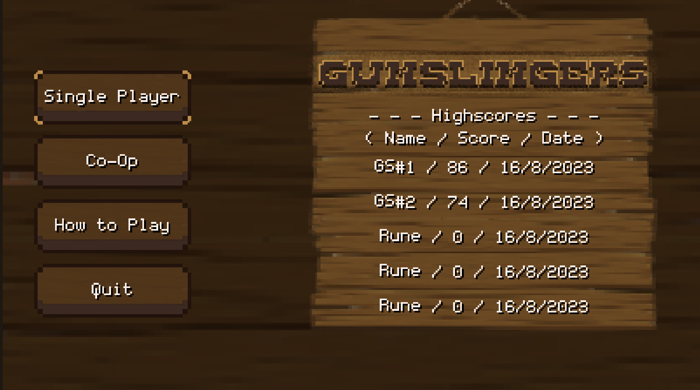
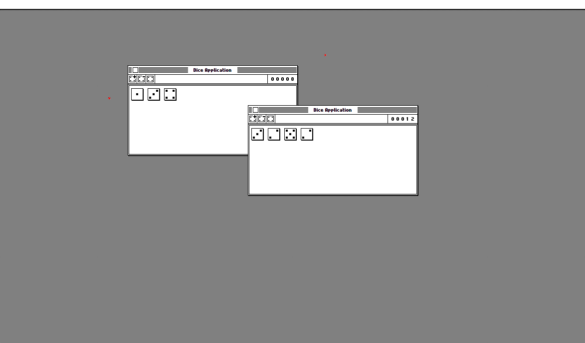
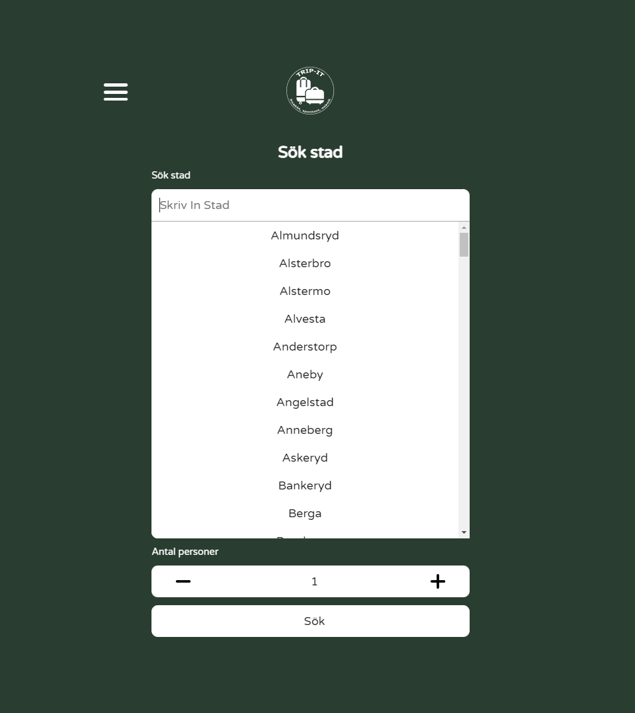
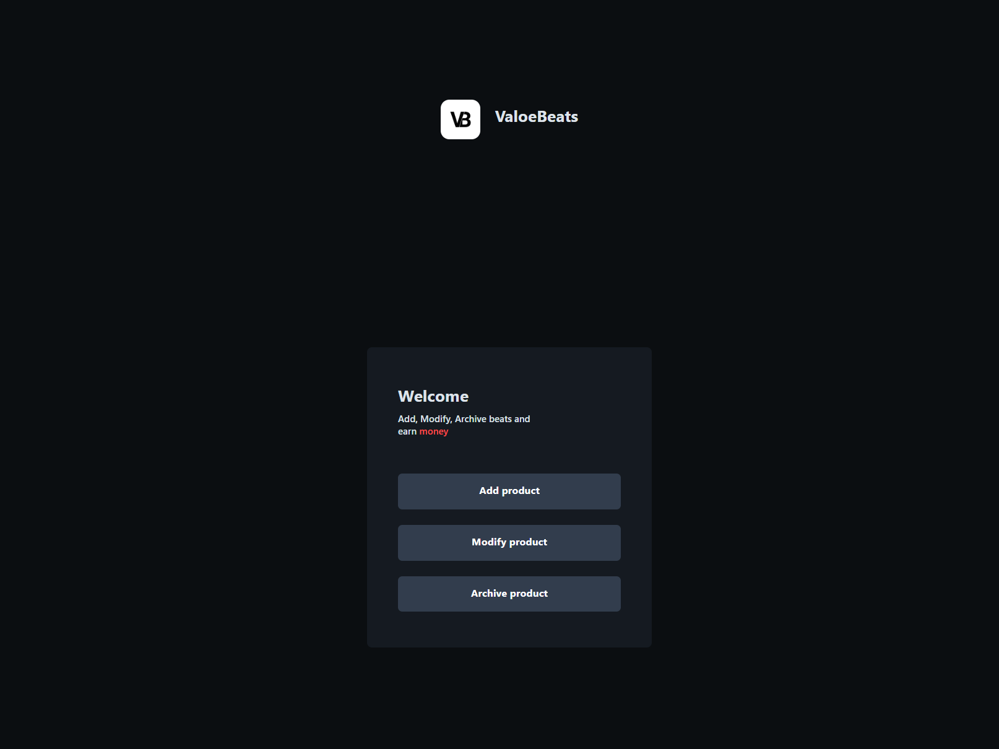
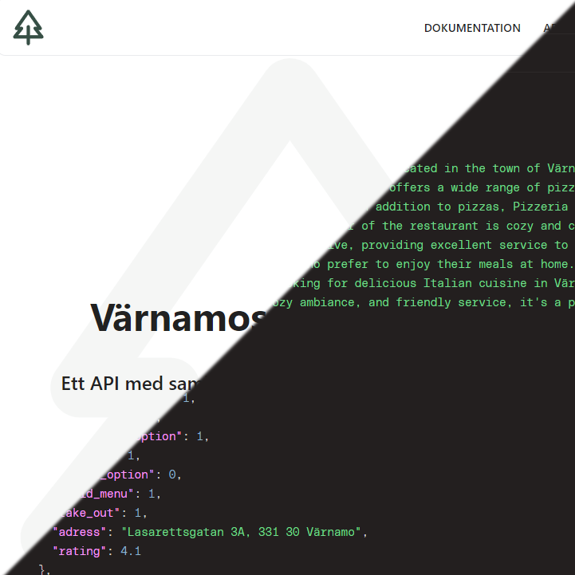
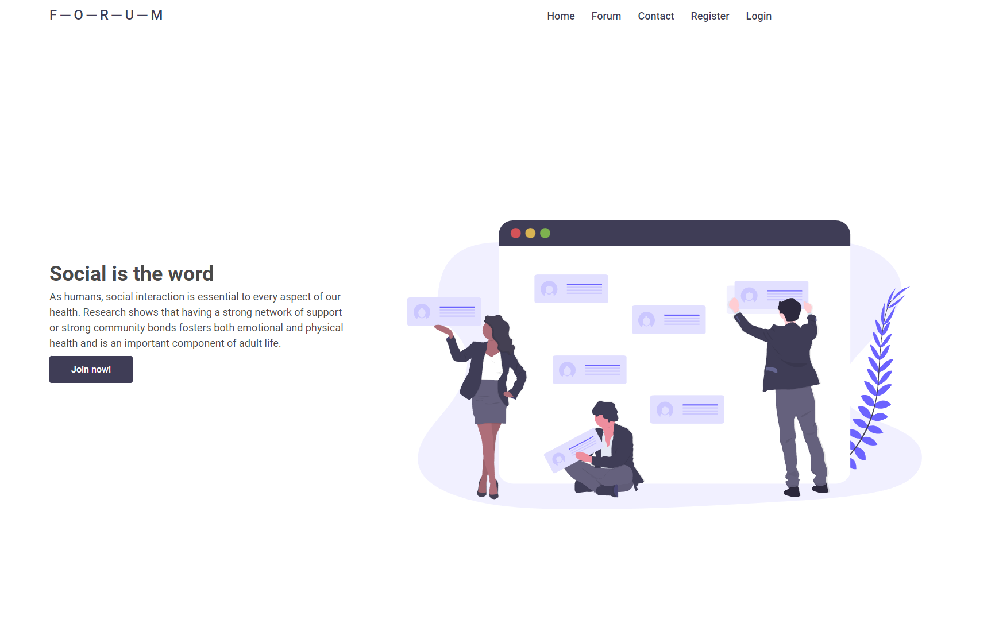
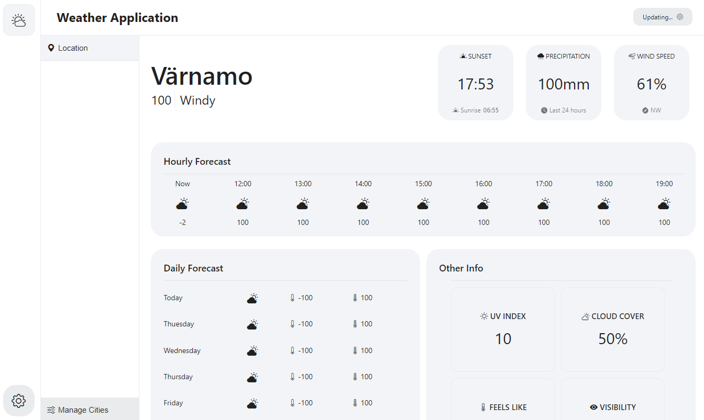

Hi, Emil here! I am UI/UX Developer based in Värnamo, Sweden.

Gunslingers
As a part of the Project in media technology course, a project was undertaken to develop an arcade game for Rune OS using the Rune Game SDK. The game was developed using JavaScript, HTML, and CSS. The game was developed to be played on a Rune OS device.

Dice Application
As a part of the Webbtechnologies 5 course, a project was undertaken to develop a dice application using (OOP) concepts. This project aimed to bring the students' understanding of OOP principles into practice by developing a functional application that incorporated the use of classes, objects, methods etc.

Food Order
Designed an intuitive and visually appealing interface for a fast food ordering process. The project included UI and UX designing where user testing was conducted to ensure that needs and expectations were met. The end result was a successful food ordering UI with positive feedback from users.

Trip-it
A travel application developed using an external API to provide information services for a selected city. It offers easy access to accomodation, food, and miscellaneous information, streamlining the travel process for users.

ValoeBeats
An application developed for the producer ValoeBeats. The application was developed to provide a platform for the producer to upload, monetize, and share his music. The application was developed using PHP, SQL, and MySQL.

REST-API
A project undertaken to develop an API for the city of Värnamo. The goal was to provide a platform to share information about the city and to broaden my knowledge about API's in general. The project was developed using PHP, SQL, and MySQL.

F-O-R-U-M
This project was undertaken to develop a forum using PHP, SQL, and MySQL. The goal was to provide hands-on experience with these technologies by creating a functional online forum where users could create accounts, post discussions, and interact with each other.

Weather Application
Using Electron JS, a weather application was developed to provide users with weather information. The application was developed using HTML, CSS, and JavaScript.